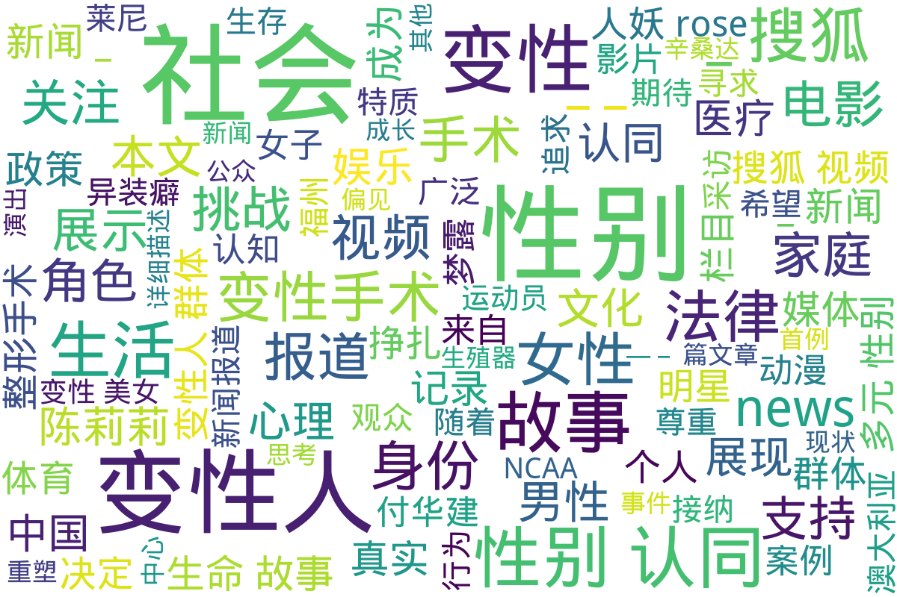

搜狐
该目录包含多个关于多元性别和变性人群体的故事与报道，主要分为生命故事、社会现象和法律政策三个方面。首先，包括军事领域变性故事的汉纳·温特伯尔尼，她是英国陆军第一位变性军官，带领超过100名士兵，文章展示了她的内心挣扎与转变，以及在军队中获得的支持和接受；其次，搜狐视频栏目“人妖rose”收录了21个关于人妖rose的生活与工作的视频，探讨了她作为公众人物的影响力。此外，关于变性人兰的故事，影响深远，强调了社会认知的变迁，包括变性手术的个人故事、性别认同的挑战和希望等多样内容。最后，法律与社会环境方面的报道涉及了多位变性人的困境与挑战，以及韩国大法院关于变性人户籍性别更改的历史性判决，为变性人群体的权益保障提供了法律支持。全体故事反映了社会对多元性别的包容进程和对变性人群体的关注，促进了公众对这一特定群体的理解与接纳。
标签: 变性故事, 多元性别, 社会现象, 法律政策, 生命故事, 变性人群体, 性别认同, 社会支持
总计 27 篇内容
🌐 网页
2022
tv_千万别看魔改三国动漫，天然呆吕布战力爆表，女子龙居然被一击秒查看摘要
该文件记录了一系列与性转三国演义动漫相关的视频内容，其中包括对不同角色进行性别转换的讨论。内容涉及多部热门动漫的更新和特点，例如《恋姬无双》123季，以及对于角色塑造的趣味分析，特别是将历史名将转变为女性角色的各种设定。这种改编不仅引发了观众的兴趣，也产生了关于如何以新颖的方式重塑经典文学人物的讨论。内容中包含了对魔改三国演义的批评和探讨，表现了大众对该类作品的期待及争议。视频中提到的一些具体视频片段包括：女子版赵子龙的登场、曹操与关二姐的互动等，展现了动漫作品中的幽默和创新元素。这种性别转换不仅是为了娱乐，也引发对性别问题和文化创作方式的深入思考。
2021
www_走异性的路让异性无路可走？6部跨性别经典电影_-_搜狐查看摘要
本文讨论了6部经典跨性别电影，强调了跨性别主题在电影中的重要性和影响。文章回顾了电影《丹麦女孩》、《冥王星早餐》、《三代人》、《发胶》、《足球尤物》和《不良教育》，逐一介绍这些影片中的跨性别角色及其所经历的挑战和成长。比如，《丹麦女孩》讲述了艺术家莉莉·艾尔比的真实人生故事，涉及性别认同和历史背景；而《冥王星早餐》则聚焦于一个被社会拒绝的青少年，展现了他的内心挣扎与转变。每部电影都通过不同的角色和情节，反映了跨性别人士的真实经历，并探讨了社会对性别的理解与包容度。还有关于每位演员为角色所做的准备和改变，表现出跨性别角色的多样性与复杂性。整篇文章传递了对多元性别的理解与尊重，倡导在这个世界里对抗二元对立的思维，呼吁更多的宽容和爱。
2017
本文探讨了异装癖的心理现象，分析了男性和女性在异装癖行为背后的原因与表现。异装癖被定义为通过穿着异性衣物来获得性兴奋的行为，这种行为与同性恋和恋物癖有所不同。作者引用心理学家荣格的观点，讲述了人格中存在的两个原型－‘阿尼玛’和‘阿尼姆斯’，并分析了性别特质在个体性格及其社会环境中的角色。同时，文中结合多位个体的案例，比如生活环境对性别认同的影响，展示了男女在社会压力下如何通过异装来寻求内心的认同和满足。文末呼应现代社会对双性化特质的接纳，强调每个人都有多个性别特质的一面，倡导对性别角色的理解与宽容。
2016
《跨性别者名单》是一部探讨跨性别群体多样性和经历的纪录片，旨在帮助社会更好地理解这些被认定为跨性别者的人的故事和生活。影片通过11位来自不同背景的跨性别者的个人经历，揭示了他们在性别认同与出生性别不一致的过程中所面临的挑战与奋斗。这些故事不尽相同，展示了跨性别、变性人、性别酷儿、双性恋和非二元性等多种自我认同，强调每个人的独特性和所经历的复杂性。填补了社会对这一群体的认知空白，电影由蒂莫西·格林菲尔德·桑德斯执导，拉弗恩·考克斯等明星参与演出。影片通过访谈和实地记录，将跨性别者的声音传递给更广泛的观众，努力提高公众对跨性别者生活状况的认识。
2015
mil_27岁帅哥军官变性成美女带兵超过100人_-_军事-_搜狐查看摘要
本文件讲述的是一位名为汉纳·温特伯尔尼的英国女军官的变性故事。她原本是男性，服役于阿富汗期间因为无法继续隐藏真实自我，最终决定变性。汉纳成为了英国陆军第一位也是军阶最高的变性军官，带领超过100名士兵。文件详细描述了汉纳的内心挣扎和转变过程，以及她在军队中获得的支持和接受。她提到，虽然一开始同事们对此感到震惊，但随着时间的推移，他们认同了她的能力与性别无关。在变性过程中，汉纳得到了家庭的支持，并且英国军方的政策也为变性人士提供了保障，显示出军队对多元性别的包容性。文章中还指出，英国军方被认为是全球对同志最友善的军队之一，这进一步反映了社会对变性人群体的逐步接受和支持。
2014
pic_高清图：阿根廷美女裹胸秀性感伪娘着芭蕾舞裙_121_查看摘要
该文件是一篇来自搜狐体育的网页，介绍了一位阿根廷美女穿着芭蕾舞裙并裹胸展示性感的一组高清图。文件包含21张相关图片，展示了模特的多种姿态与服装细节，强调了跨性别女性在艺术表现中的美与魅力。文件发布于2014年7月2日，相关内容可能与当年的世界杯相关联，展现了阿根廷粉丝的文化特征。这组图片不仅仅是一份娱乐内容，同时也反映了社会对跨性别群体表现的接受与偏见，值得关注与思考。
2013
my_变性人-栏目-_搜狐视频查看摘要
该文件介绍了搜狐视频中的一个名为“变性人”的栏目，包含了8个以变性人主题为核心的视频。栏目创建于2013年7月6日，通过多样的内容展示了变性人的生活现状、社会影响与个人故事。视频内容包括一个18岁男子因家庭反对而欲卖肾进行变性手术的故事、国际变性人选美及泰国变性人选美的相关记录，反映了变性人在社会中所面临的挑战与机遇。通过这些影像资料，观众可以更直观地理解和感受到变性人群体的生活经历与社会环境。该栏目致力于在多个层面上提升公众对变性人群体的认知与理解。
该文件是搜狐视频自媒体栏目"人妖rose"的内容收录，包括21个视频，主要展示了关于人妖rose的生活、工作以及相关娱乐话题。文件创建于2013年，包含了诸多视频链接，如分析人妖rose在电影《泰囧》中的角色、她的个人生活态度以及在社交平台的表现等。视频中不仅有个人经历的分享，还有对其社会现象的探讨，突显了人妖rose作为公众人物在社会中的影响。此外，文件包含了人妖rose的多部相关视频简介，展示了她的知名度与社会关注。
2010
《杀千刀的人妖》是一部于2010年上映的美国喜剧惊悚片，由Israel Luna执导和编剧。这部电影通过嘲讽和揭示跨性别群体在社会中面临的困境和偏见，引发观众对相关议题的思考。影片包含了多位跨性别演员的表现，主要角色包括Krystal Summers饰演的Bubbles、Kelexis Davenport饰演的Pinky La'Trimm和Erica Andrews饰演的Emma，展现了她们在生存的挣扎中，寻找力量和团结的故事。电影的主题涉及跨性别群体的经历，喜剧和惊悚元素的结合让人深思，体现了社会对于“其他”的恐惧和误解。该影片的播放量显示出人们对这样的故事和视角的关注。影片可以引起人们对跨性别者生活现状的关注与反思，并推动对相关社会议题的讨论。
sports_NCAA女篮球员欲不变性跨性别参赛已或学校支持_-_体育查看摘要
本文报道了美国乔治华盛顿大学的一名女篮球员凯·阿伦斯（Kye Allums）向NCAA（全国大学体育协会）提出申请，以男性身份参赛的故事。凯·阿伦斯在初中时意识到自己的性别认同，她不愿再被称为女性，虽然她并没有进行过变性手术。在学校的支持下，她希望能改变性别登记，真诚表达自己真实的身份。此举在NCAA中引起了广泛关注，因为如果申请得到通过，凯·阿伦斯将成为该联盟历史上首位以跨性别身份参赛的球员。关于跨性别运动员的参与政策，NCAA显然还没有找到一个明确的答案，因此面临很多挑战。
2009
v_视频：明星大考场戴军现场变身妩媚泰国人妖-搜狐娱乐播报查看摘要
这是一则来自搜狐娱乐播报的视频稿件，报告了戴军在某次明星大考场节目中的表现，他现场“变身”成妩媚泰国人妖。本期节目中还包括了其他明星如艾梦萌、王筝和刘维的精彩表演，内容涵盖了音乐、舞蹈和才艺展示等多个方面。艾梦萌带来了她的新歌并在节目中展示了摇滚风格的才华，王筝则在产后复出，现场展示了她美妙的嗓音，而刘维则现场演出了一段引人注目的舞蹈。节目同步介绍了张茜与其爱人之间的一段趣闻，增加了娱乐性和观众的好奇心。整体来看，这则报道展示了中国娱乐圈中多位明星的亮点与发展，以及当时的娱乐文化氛围。
2006
news_贵州男子变性当美女_图__-_新闻-_搜狐查看摘要
本文讲述了贵州一名25岁男子刘艺妃的变性经历。他于2006年4月10日在广西南宁华美整形医院举行的新闻发布会上亮相，宣布即将进行变性手术，成为广西首例变性美女。刘艺妃在手术前的采访中，谈到自己的变性梦想和对未来生活的期待，以及手术由来自医院的知名医生主刀。根据报道，手术预计耗资超过20万人民币，整形医院将承担费用。本文突出了变性人的勇敢和追求自我认同的精神，具有一定的社会和医疗价值。
news_韩国大法院首次许可变性人更改户籍性别_-_新闻-_搜狐查看摘要
本文件为关于韩国大法院历史性判决的新闻报道，内容涉及中国社会对变性人权利的法律认可进程。2006年6月22日，韩国大法院首次判决允许变性人在经历变性手术后更改户籍性别的请求，这是对于3万名变性人法律权益的重要保障。报道详细介绍了案件的经过，A某作为典型案例，在经过一系列法庭审理后大法院裁定其可以更改户籍性别。文件中还提到这一判决引发的社会反响和法律讨论，包括支持与反对的声音，涉及变性人面临的实际困难及对家庭、社会及法律制度的影响。主要描述了社会对变性人身份认同的变化，法律角色的界定，以及对未来立法和社会认知的呼吁，同时反映出日益增强的对变性人权利的尊重及法律支持。
2005
news_28岁两性畸形人性别难辨无法办身份证户籍_图__-_新闻-_搜狐查看摘要
本文讲述了28岁两性人付华建的艰辛故事，他因性别特征不男不女而无法办理身份证和户籍，生活中面临重重困难。付华建的童年经历充满了不幸：在幼年时遭遇严重意外，失去了父母，成为无家可归的孤儿。随着年龄的增长，付华建发现自己的生理特征与正常人有显著差异，导致他在社会上遭受歧视和排斥。尽管经过多年的努力尝试寻求认同与身份，付华建的生活仍受到性别模糊问题的制约，甚至在找工作和生活中面临如上厕所被殴打等极端情况。报道中提到，付华建在23岁时终于决定求医，接受检查，得知自己有先天性两性畸形的病症。随着医院同意为其进行手术，付华建开始对未来充满希望，但因经济条件限制仍感到不安。文章不仅揭示了他面临的困境，也反映了社会对多元性别群体的认识与支持的缺乏。
news_'我天生就应做女人'_一个阴阳人的变性故事_组图__-_新闻-_搜狐查看摘要
这篇文章讲述了一个阴阳人杨柳的变性故事，展现了他漫长而艰难的性别认同之旅。出生时的他同时具有男性和女性的生殖器官，一生中经历了无数痛苦与挣扎。从被亲生父母遗弃，到不断接受变性手术与心理上的挣扎，杨柳选择了成为女性，而这一决定伴随着身体和心理上的双重挑战与成长。文中详细描述了她进行的多次手术记录，包括丰胸、改脸形、尿道修补和阴道再造的经历，以及手术后的心理变化与自我认同的恢复。在经历了这些挑战后，杨柳不仅获得了女性身份，还开始适应女性的生活方式，享受购物、化妆等女性活动。同时，她也表达了对未来的期待，希望找到真爱，并在故事的结尾展现了她的自信与新生。这一过程真实而感人，给人以深刻的人性思考和对多元性别的理解。
news_变性美女陈莉莉福州征婚曾经为情而自杀_组图__-搜狐新闻查看摘要
本文主要讲述了变性美女陈莉莉的生活与情感经历。她正在准备进行第三次整形手术，主要目的是为了尽可能完美地展现女性形象，从而寻求婚姻和家庭的稳定。陈莉莉身高1.73米，体重55公斤，她在事业上也取得了一定的成就，曾在以变性人题材的电影《隐私》中担任主角，并正在拍摄古装戏。尽管因整形手术获得了很多关注和追捧，陈莉莉内心深处最大的渴望依然是组成一个家庭。她曾因情感问题而自杀，如今通过媒体寻求人生伴侣，希望能够生育孩子。她提到现代科技为她成为母亲提供了更大的可能性，这反映了变性人群体在情感和生育方面的追求与挑战。
news_图文：变性人陈莉莉福州再次动刀完善女性特征_-_新闻-_搜狐查看摘要
本文报道了变性人陈莉莉在福州进行整形手术的经历与背景。陈莉莉原名陈勇军，在2003年完成了男变女的变性手术。文章开头提到她在2005年11月30日接受了媒体采访，分享了即将进行的左颧骨和胸部整形手术，目标是进一步完善女性特征。陈莉莉身高173厘米，体重55公斤，来自四川南充市仪陇县，她对于自己追求女性外貌的决心在会谈中被强调。文中还包括多个陈莉莉在接受检查和采访时的照片，展示了她积极追求自我认同和生存状态的真实记录。此类事件不仅是个人的转变，也反映了社会对变性人的关注和对多元性别的包容性逐渐提高。
news_孕妇乘上公交车竟然无人让座位-搜狐新闻中心查看摘要
这篇文章记录了一名孕妇在公交车上的经历，她上车时并没有空位，甚至连老弱病残孕专座也被其他乘客占据。文章中详细描述了乘客的反应，指出了一位长者在看到孕妇站着时忍不住提醒车上其他乘客让座，最终促使一位中年男子让出了他的座位。这篇报道反映了社会对孕妇的关心和支持，同时也揭示了公交车上存在的社会行为问题，尤其是在对待弱势群体方面的态度。
news_缅甸女一夜变男人长出男性生殖器乳房消失_图_-搜狐新闻中心查看摘要
本文报道了缅甸一名女子辛桑达在一夜之间神秘变性成为男人的故事。文章详细描述了辛桑达的经历，在6月21日的满月日，她自觉下身发生异样，醒来后发现自己的女性生殖器消失，取而代之的是男性生殖器。同时，她原本丰满的乳房也无迹可寻。辛桑达的父母对女儿的变化感到震惊和兴奋。此消息迅速传播，引起大批好奇者到访，并吸引了媒体的广泛关注。辛桑达后来改名为桑塞，期待医学专家能够帮助识别其变性原因，并表达了自己希望成为僧侣的愿望。
sports_结束25年男足经历澳大利亚变性人转投女足联赛_-_体育-_搜狐查看摘要
本文报道了一位来自澳大利亚的变性球员马丁·德莱尼的故事，她在结束了25年的职业男足生涯后，成功转投女子足球联赛。报道详细阐述了德莱尼的背景及其变性经历，并说明了她在女足比赛中的表现及引发的争议。德莱尼是一位人权活动家，曾为变性人群体发声，并在相关法规下被允许参加女子足球联赛，此事件引起了澳大利亚媒体的广泛关注。文章中提到，在澳大利亚足协的规定中并没有对变性球员的限制，但建议应遵循国际奥林匹克委员会的指导方针。同时，德莱尼的这个决定也借鉴了另一位变性运动员米阿尼·巴戈尔对赛事规则的影响。这则新闻不仅展现了体育界对变性运动员态度的变化，也深刻反映了社会对性别认同的包容性。
2004
该文件是搜狐网关于变性人相关新闻的集合，涵盖了从2003年至2004年间的多篇报道，内容涉及变性人不同的生活经历、法律状况、医疗手术以及社会反响等方面。文件中包含了多个题目的链接，例如‘成都首例变性人婚后生活’以及‘全国首例“女变男”变性人和女友正式结婚’等，这些报道反映了变性人在中国社会中面临的挑战与压力，以及他们在寻求身份认同过程中的种种经历。此外，还关注了变性手术的医疗技术以及法律制度的逐步完善，比如一些地方的变性人可以合法登记结婚，以及面临的法律空白问题。这些内容不仅展现了变性人群体的生活状态，也引发了社会对变性人权利的关注与讨论。
该文件为搜狐新闻网站撰写的专门关于中国变性人的新闻频道，汇总了多篇报道和故事，涵盖了变性人群体的多方面经历与事件。从新闻列表中可以看到，内容包括变性手术的个人故事、家庭与社会反应、婚姻生活、法律问题以及相关的社会事件。例如，新闻中提到了一位西安女子希望变性为男子的故事，以及四川地区第一位变性人迈出的重要一步。此外，也有关于变性人面临的社会歧视与挑战的记录，和在公共领域中变性人身份的不断被认可。文件为读者提供了多个角度的视野来理解和关注这一特定群体的生存状态与发展。
该文件讨论了国际奥委会允许变性人参与奥运会的历史性决定，反映了社会对性别界定的逐渐宽容与认可。文章详细解析了IOC此项决策的背景，以及变性人面临的社会与法律问题。作者吕娟通过专家的观点，探讨了性别认同的复杂性，强调了对这些边缘人群人权的尊重与社会认同。此外，文章也引发了对性别未来的讨论，考虑到现代科技的发展和社会文化的演变，性别的定义和存在是否还有必要的问题。整篇文章呈现出对多元性别话题的深入探讨，揭示了变性人在体育领域以及更广泛社会中所面对的挑战与期待。
2003
news_“中国变性第一人”--张克莎中山签名售书_图__-_新闻-_搜狐查看摘要
这篇文章报道了中国变性人张克莎的成长经历和变化，她被称为“中国变性第一人”。张克莎于1962年出生于大连的一个部队高干家庭，尽管从小被认定为男性，但她的性别认同始终是女性。在接受了中国首例变性手术后，张克莎以新的身份生活，展现出她的优雅和自信。文章中也提到她在中山的签名售书活动中受到众多路人的瞩目，以及社会对变性人的尊重与接纳程度的提升。文中同时探讨了变性人在社会中面临的挑战和生存现状，强调了社会进步的重要性。
2002
news_医学博士：想变性难于上清华北大_图__-_新闻-_搜狐查看摘要
这篇文章围绕中国医学科学院性别重塑中心的工作展开，详细介绍了变性手术的背景、挑战及社会认知。文章由叶润霞撰写，主要讲述了陈焕然博士在中心所做的手术，以及与变性人患者的真实故事。作者提到变性手术的许可条件中，只有大学本科以上的学历者才能够申请手术，强调受过高等教育的人对手术的理解和理智性。同时，文章探讨了社会对变性人的偏见，以及在法律认同上的困难。通过具体案例，文章展现了手术对个人生活的影响，如性别认同、家庭支持和社会接纳等问题。文中提到了一些成功案例，如患者术后与家庭的互动，以及其在社会中的角色重塑。
2001
yule_娱乐频道-搜狐查看摘要
该文件是一篇关于著名好莱坞明星玛丽莲·梦露性别身份的深度研究文章。文章探讨了梦露可能的性别分类，重点讨论了她的性染色体异常现象。根据报导，梦露的性染色体核型可能兼具男性和女性特征，被医学界称为嵌合体。作者引用医疗专家的观点，讨论了性染色体异常的多样性，以及梦露可能的生理与心理状态，反映了社会对性别认知的局限性。文章结尾指出，梦露的生平不仅是好莱坞的传奇，同时也揭示了性别身份的复杂性，以及对跨性别和非二元性别认同的社会接受度。
时间未知，按收录顺序排列
本文讲述了两位变性人红颜和雪儿的故事，他们从相遇、相恋，到共同经历变性手术，再到决定再次手术回归男性身分的生路。红颜出生在一个经济拮据的家庭，年幼辍学后跟随姐姐打工，在广州结识了同样有过苦涩经历的雪儿。二人在经历了各自的生活挑战后，选择了通过反串的方式在夜场演出，以此谋生。随着对自身身份的认同和感情的加深，他们最终选择了相互扶持，共同经历变性手术，获得了男性和女性身份的难得体验。尽管变性后他们的事业获得了成功，收入也大幅提高，但随着时间的推移，他们又开始探讨更适合自己的生活方式。最终，红颜决定再度上手术台，恢复男性身份以与雪儿结婚，共同追求一段更加幸福的未来。
词云图

目录及摘要为自动生成，仅供索引和参考，请修改 .github/ 目录下的对应脚本、模板或对应文件以更正。